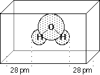

Determining Atomic Charges using the CHELPG Scheme
In the CHELPG (= CHarges from ELectrostatic
Potentials using a Grid based method) scheme
by Breneman and Wiberg (J. Comp. Chem. 1990, 11, 361),
atomic charges are fitted to reproduce the molecular electrostatic potential (MEP) at a number of points
around the molecule. As a first step of the fitting procedure, the MEP is calculated at a number of
gridpoints spaced 3.0 pm apart and distributed regularly in a cube. The dimensions of the cube are chosen
such that the molecule is located at the center of the cube, adding 28.0 pm headspace between the molecule
and the end of the box in all three dimensions. All points falling inside the van-der-Waals radius of the
molecule are discarded from the fitting procedure. The following figure describes the situation for water
as a simple example:

After evaluating the MEP at all valid grid points, atomic charges are derived that reproduce the MEP in the most
optimum way. The only additional constraint in the fitting procedure is that the sum of all atomic charges equals
that of the overall charge of the system. An input file for calculating the CHELPG
charges for water is:
#P HF/STO-3G pop=chelpg scf=(direct,tight)
HF/STO-3G//HF/STO-3G CHELPG charges for water (C2v structure)
0 1
O,0,-0.103524396,0.,-0.073843234
H,0,-0.0261242414,0.,0.9125411732
H,0,0.8543194092,0.,-0.3217953011
The results of the fitting procedure appear in the regular Gaussian output file as:
(Enter /scr1/g03/l602.exe)
Breneman (CHELPG) radii used.
Generate Potential Derived Charges using the Breneman model, NDens= 1.
Grid spacing= 0.300 Box extension= 2.800
NStep X,Y,Z= 20 25 22 Total possible points= 11000
Number of Points to Fit= 4014
**********************************************************************
Electrostatic Properties Using The SCF Density
**********************************************************************
Atomic Center 1 is at 0.000000 0.000000 0.127162
Atomic Center 2 is at 0.000000 0.758084 -0.508647
Atomic Center 3 is at 0.000000 -0.758084 -0.508647
4014 points will be used for fitting atomic charges
Fitting point charges to eletrostatic potential
Charges from ESP fit, RMS= 0.00088 RRMS= 0.05084:
Charge= 0.00000 Dipole= 0.0000 0.0000 -1.7225 Tot= 1.7225
1
1 O -0.564045
2 H 0.282023
3 H 0.282023
Charges derived in this way don't necessarily reproduce the dipole moment of the molecule. If this latter
characteristic is desired, the fitting process can be performed under the additional constraint of reproducing
the overall molecular dipole moment:
#P HF/STO-3G pop=(chelpg,dipole) scf=(direct,tight)
HF/STO-3G//HF/STO-3G CHELPG charges for water (C2v structure)
fitting also the molecular dipole moment
0 1
O,0,-0.103524396,0.,-0.073843234
H,0,-0.0261242414,0.,0.9125411732
H,0,0.8543194092,0.,-0.3217953011
CHELPG charges are frequently considered supperior to Mulliken charges
as they depend much less on the underlying theoretical method used to compute the
wavefunction (and thus the MEP). In order to illustrate this point, the atomic charge for the oxygen atom
in water (experimental gas phase structure with r(O-H) = 95.72 pm and a(H-O-H) = 104.52o) has
been calculated at several differrent levels of theory using the Mulliken as well as the
CHELPG scheme:
| level of theory | CHELPG | Mulliken
|
|---|
| HF/STO-3G | -0.617 | -0.366
|
| HF/3-21G | -0.873 | -0.728
|
| HF/6-31G(d) | -0.807 | -0.866
|
| HF/6-311+G(2d,1p) | -0.750 | -0.471
|
| HF/cc-pVDZ | -0.747 | -0.305
|
| HF/cc-pVTZ | -0.738 | -0.483
|
| HF/cc-pVQZ | -0.731 | -0.526
|
| Becke3LYP/cc-pVDZ | -0.694 | -0.255
|
| Becke3LYP/cc-pVTZ | -0.700 | -0.432
|
| Becke3LYP/cc-pVQZ | -0.693 | -0.487
|
While the Mulliken charges differ widely (between -0.255 and -0.866) with theoretical method and basis set choice,
the CHELPG charges are much less variable (between -0.617 and -0.873). Moreover, the CHELPG
charges are practically constant at either the Hartree-Fock or Becke3LYP level of theory provided that one of the
correlation consistent basis sets is being used. Poor results are obtained even with the CHELPG
scheme with small basis sets such as STO-3G or 3-21G.
One of the weak points of CHELPG (and other approaches based on fitting the MEP)
is the treatment of larger
systems, in which some of the innermost atoms are located far away from the points at which the MEP is evaluated.
In such a situation, variations of the innermost atomic charges will not lead to significant changes of the
MEP potential outside of the molecule and fitting of these atomic charges will therefore not result in
meaningful results. It should also be remembered that atomic charges can depend strongly on the conformation
of the molecule. Representative atomic charges for flexible molecules should therefore be derived as average
values over several conformers. Using ethanol as an example, the charge parameters derived for the
Cs symmetric conformer A and the C1 symmetric conformer B vary, in part,
by almost 30%. The variation is, however, rather different for different parts of the system.
A detailed overview of the effects of the basis set and the Hamiltonian on the charge distribution
in water can be found in: F. Martin, H. Zipse, J. Comp. Chem. 2005, 26, 97 - 105.
A copy of the pdf file is available here.
last changes: 12.01.2004, HZ
questions & comments to: zipse@cup.uni-muenchen.de